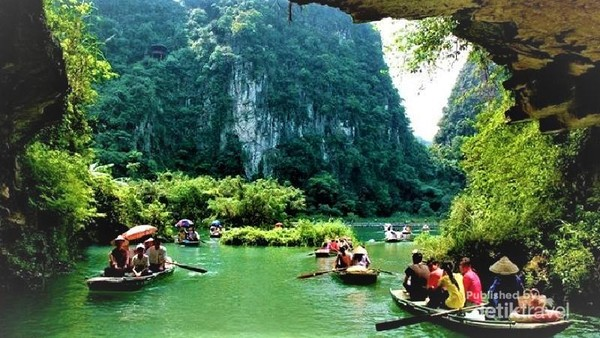
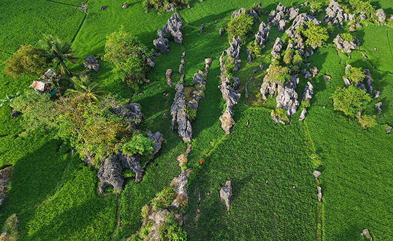
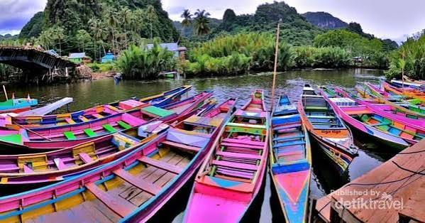

Selamat Datang di Rammang-Rammang
Rammang-Rammang merupakan salah satu destinasi wisata alam yang berada di Kabupaten Maros, Sulawesi Selatan. Kawasan ini terkenal dengan pemandangan pegunungan karst dan suasana alam yang indah.
Rammang-Rammang cocok bagi pengunjung yang ingin menikmati keindahan alam dan suasana yang tenang.
Galeri Rammang-Rammang



Aktivitas yang Dapat Dilakukan
- Menyusuri sungai menggunakan perahu
- Menikmati dan mengabadikan pemandangan alam
- Menjelajahi kawasan wisata
- Menikmati suasana alam
- Menikmati pemandangan pegunungan karst
Informasi Lokasi
Nama: Rammang-Rammang
Kabupaten: Maros
Provinsi: Sulawesi Selatan
Jenis Wisata: Wisata Alam
Informasi Destinasi
| Informasi | Keterangan |
|---|---|
| Nama Destinasi | Rammang-Rammang |
| Lokasi | Maros, Sulawesi Selatan |
| Jenis Wisata | Wisata Alam |
| Daya Tarik | Pegunungan Karst dan Sungai |
| Aktivitas | Susur Sungai, Fotografi, dan Menjelajah Alam |